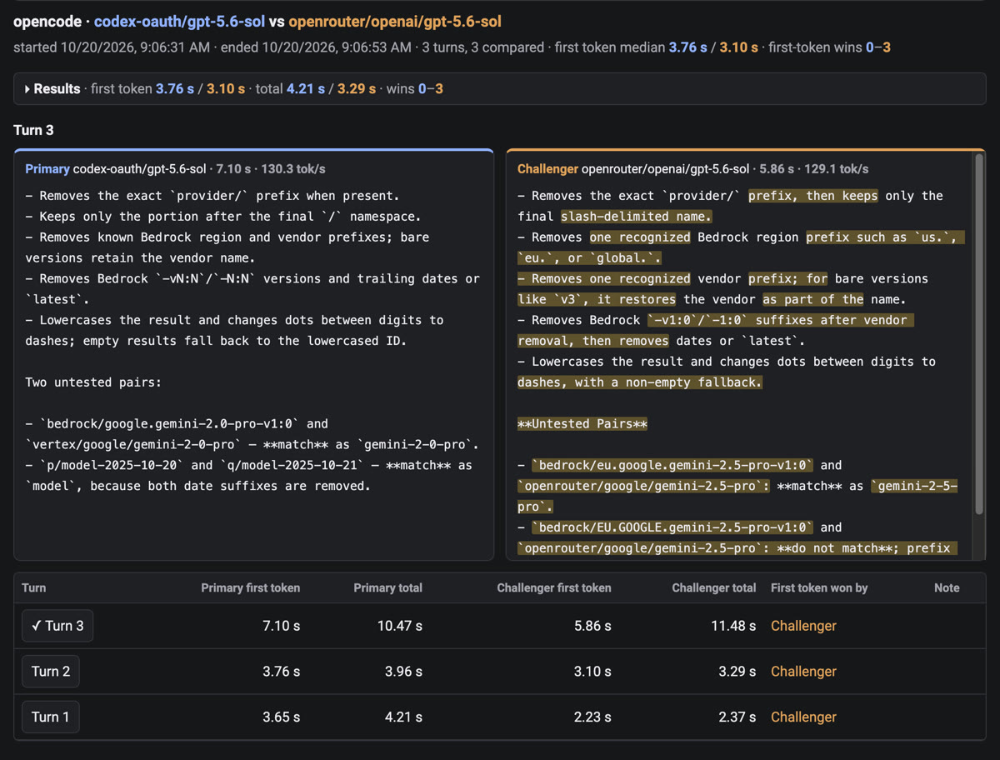

Agents talk to zag. zag talks to the providers.
Start an agent with zag run once, and it sends every request to the gateway on your Mac instead of straight to a provider.
- zag run claude
- zag run codex
- zag run opencode
- zag run pa
- zag run pi
- Checks the agent's virtual key and its monthly budget.
- Runs the Python hooks: the rules route, reject or tag the request, or ask a local model to decide.
- Tries the route, then each fallback in turn, translating the request into the protocol that provider speaks.
- Translates the reply back chunk by chunk, records tokens, cost and the rule's decision, and feeds the Live tab.
- Claude subscription
- ChatGPT sign-in
- OpenRouter
- Amazon Bedrock
- Ollama, on this Mac
- Posit AI Pass
- Anthropic and OpenAI keys
The gateway listens on 127.0.0.1. An agent only ever holds its virtual key: zag removes the agent's own provider keys and endpoints from its environment, so it cannot go around the gateway, and the real credentials stay with zag.
Same model, two providers. Which one is faster?
The same model can be sold by several providers, and they do not answer at the same speed. A battle measures the difference on your own work, not on a benchmark.
Work as usual. Every request the agent makes to its model also goes, at the same moment, to the challenger. The agent gets only its own model's answer; the challenger's answer is timed and thrown away.
For every turn zag records time to first token, total time, output speed and errors for both sides, and sums them up as medians, p90s and wins. The records hold numbers only, never prompt or answer text.
Below is a real battle: OpenCode reading two Go files and explaining them, with GPT-5.6 Sol through a ChatGPT plan against the same model through OpenRouter. OpenRouter sent its first token sooner on all three turns.

$ zag battles show 20261020-130631-opencode
battle 20261020-130631-opencode: opencode, 3 turns, 3 answered by both
MODEL FIRST TOKEN p50/p90 TOTAL p50/p90 TOKENS/S WINS
primary codex-oauth/gpt-5.6-sol 3757 ms / 7097 ms 4212 ms / 10475 ms 130.3 0 first, 1 total
challenger openrouter/openai/gpt-5.6-sol 3100 ms / 5856 ms 3295 ms / 11481 ms 239.4 3 first, 2 total
TURN PRIMARY FIRST TOTAL CHALLENGER FIRST TOTAL
1 3647 ms 4212 ms 2228 ms 2370 ms
2 3757 ms 3956 ms 3100 ms 3295 ms
3 7097 ms 10475 ms 5856 ms 11481 ms
One model, many names
zag matches a model across providers' names, so codex-oauth/gpt-5.6-sol, openrouter/openai/gpt-5.6-sol and bedrock_mantle/openai.gpt-5.6-sol are the same contender. zag models --agent pa lists what each provider can serve, and a battle that cannot run is refused before the agent starts.
Watch the race
The Battles tab streams both answers side by side while the battle runs, shows a highlighted diff between the responses from each model, and charts first token and total time for each turn. In the menu bar app, pick the two models from menus and copy the command.
Fair by construction
Both sides get the same request at the same moment and are measured by the same meter, whether the provider speaks Chat Completions, Responses or Anthropic Messages. Both are billed, so a battle costs two answers per turn.
For the person running five agents at once
Each agent has its own idea of where to send a request and what it costs. zag gives them one door, and gives you one place to look.
One command per agent
zag run claude, codex, opencode, pa or pi points that agent at the gateway, gives it a virtual key with a monthly budget ($50 unless you set another), and starts it. --dry-run prints the plan, with the key hidden, and starts nothing.
Use the accounts you already have
zag login claude and zag login codex reuse the sign-in Claude Code and Codex already hold; zag reads those tokens and never writes them. OpenRouter keys go in the macOS keychain, Bedrock uses your AWS profile, Posit AI Pass signs in through the browser, and Ollama needs nothing.
Rules you can read
A rules document is a short JSON list. The first enabled rule that matches by agent, project, provider, model, hour, prompt size, pattern or a recent refusal wins, and it routes, rejects, tags or decides. A new version takes effect on the next request, with no restart. Build rules by hand or in the rules UI.
Let a small model choose
A decide rule lists two to eight routes, each with a sentence that says which requests suit it. A local model on Ollama reads the end of the prompt and picks one. If it is slow or unsure, the request takes the fallback route.
Try a change on yesterday's traffic
Preview replays a draft over the requests the gateway stored and shows what each rule would have done. Every activation is a numbered version with a note, and zag rules rollback brings an old one forward.
Route by project
Put a .zag.json in a repository to name the project and pick a model for each agent there. Its requests carry the project's name, rules match on it, and the Traffic tab splits spend by it. One client's work can go to Bedrock while another's goes to Posit.
Budgets that stop spending
Each agent's key has a monthly limit. When an agent reaches it, the gateway refuses its requests until the month resets. zag agents and the menu bar app show how close each agent is.
Guard rails on by default
A prompt that carries an AWS key, a GitHub token, an Anthropic key or a private key is blocked. A sudden spike or a burst of repeats marks a request as suspicious and sends it to a route you choose. The hooks spot a refusal in the reply, and rules can act on it next time.
Your Claude subscription stays with Claude Code
Anthropic allows a Claude Pro or Max subscription only in Claude Code, so zag holds to that in three places: zag run will not start another agent on it, the router refuses every other key, and the proxy refuses a request that does not open the way Claude Code's do.
Know where the money went
The Traffic tab shows requests, cost, p50 and p95 latency, refusals and flags, split by agent, project, provider, model or rule, over an hour to thirty days. zag agents prints each key's spend against its budget.
A menu bar app, if you want one
Zag.app starts and stops the gateway, signs in to every account, shows each agent's spend against its budget, and copies the command that starts it. It carries its own zag, is signed and notarized, and updates itself with Sparkle.
Says what is wrong
zag doctor checks the install, the accounts and the rules, and names the command that fixes each problem. zag models lists what each provider serves, and why a provider is missing.
A decision in under a second
Asking a model which route fits costs time on every request. On this Mac, the 9B nimble model on Ollama took about 450 ms plus 0.35 ms for each character of prompt it read.
So zag sends only the last 1,000 characters and waits at most 1.2 seconds. Four real coding requests with 20,000-character prompts were each decided in 650 to 743 ms, with confidence from 0.85 to 0.99.
decide.error=timeout.How zag is built
zag is a Go program with a Python hooks host beside it and a SwiftUI app on top. These are the choices that shape it.
One binary, its hooks inside
The zag file carries the hooks host's Python project. When zag serve starts, it writes that project to ~/.zag/runtime/<digest>/ and uv builds the environment, so a gateway always runs the hooks its own build was tested with.
A router of its own
The gateway is a Go module with a ports-and-adapters layout, run inside zag serve's process. The core imports only the standard library and its ports; adapters never import each other, and a test enforces it. It builds without cgo for macOS, Linux and Windows, so another program can embed it with adapters of its own.
Bytes you did not touch stay the same
The router parses a body into an ordered JSON document. A field that no hook and no translation changed goes to the provider byte for byte, so a provider's newest options pass through before zag knows their names.
Translation that refuses to guess
Each provider lists the protocols it accepts. When the agent speaks another one, the router translates the request and the reply, whole or chunk by chunk: Chat Completions to the Responses API or to Anthropic Messages, Responses to chat, and OpenAI Decisions to Ollama System One and back. A field it cannot carry faithfully gets a 400 that names it, never a silent drop. Property tests check that a stream translated chunk by chunk equals the whole reply translated at once.
Hooks in the LiteLLM shape
Handlers are Python CustomLogger methods that run before and after a call, with their own time limits: 2 seconds before, 3 after. A slow or broken hook lets the request through and tags it, rather than failing it. The rules engine, the abuse classifier and the refusal detector are hooks too, and a handler of your own sits beside them in ~/.zag/hooks. Hooks see a fingerprint of the key, never the key.
One small database
Keys, budgets, the request log and every rule decision live in one SQLite file, written by a single goroutine through a bounded queue: if the disk falls behind, zag counts the dropped rows rather than holding up a request. Costs come from a price table built into the binary.
A live feed with no text in it
The router reports each attempt, chunk and finish to an observer port. A hub in the serve process sends at most four updates a second for each request to the Live tab, and drops a viewer that falls behind instead of waiting for it. No event carries prompt or reply text, and a test holds the pipeline to that.
Released on every merge
Each push to main is a release candidate. Conventional commits set the version; a Mac runner builds the CLI, signs, notarizes and staples the app, writes a Sparkle appcast with delta updates, and checks that every download link resolves before it publishes the feed. That is 51 releases in five weeks.
What zag works with today
| Command | Agent | How zag sets it up |
|---|---|---|
| zag run claude | Claude Code | Gateway address, virtual key, and agent and project headers in its environment |
| zag run codex | OpenAI Codex CLI | A zag provider table in Codex's own config, on the Responses API; the rest of the file is left alone |
| zag run opencode | OpenCode | A zag provider in a config file zag writes for it |
| zag run pa | Posit Assistant | Provider settings and a pinned model at launch; zag install pa installs it |
| zag run pi | pi | A zag provider in pi's models.json |
| Login | What it reaches | Where the secret stays |
|---|---|---|
| claude | Your Claude Pro or Max subscription, for Claude Code only | Claude Code's own sign-in; zag reads it and never writes it |
| codex | OpenAI models through your ChatGPT plan | Codex's own sign-in; zag reads it and never writes it |
| openrouter | Every model OpenRouter serves | The macOS keychain |
| bedrock | Amazon Bedrock models, including OpenAI models on Bedrock | Nothing stored: your AWS profile and region |
| ollama | Models on this Mac, and the model behind decide rules | No secret |
| posit | Anthropic and OpenAI models through Posit AI Pass | A file in ~/.zag that only you can read |
Four commands to the first request
Get the menu bar app, which brings the command-line tool with it, or the command-line tool alone, from the latest release.
The menu bar app
- Download
Zag-<version>.zipand move Zag.app to Applications. - Open it, and let it link its
zagcommand into/usr/local/bin. - Click Set up Zag, then Start, and sign in under Accounts.
- Copy the command for an agent and run it in a terminal.
The command-line tool alone
- Download
zag-darwin-arm64, rename it zag, make it executable, and put it on yourPATH. - Write the defaults, start the gateway, sign in, and start an agent:
Each release has a SHA256SUMS file. In the download folder, shasum -a 256 -c SHA256SUMS --ignore-missing must print OK for each file. Something not working? Tell us in an issue.